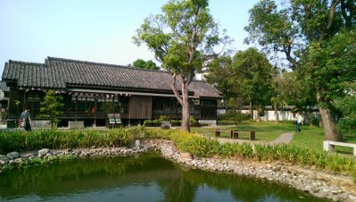
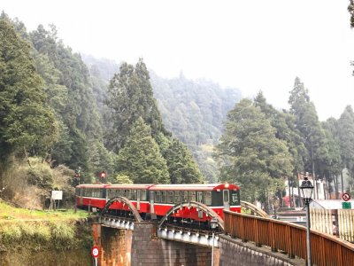
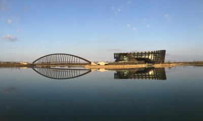

檜意生活村 |
|
「如果你來嘉義，超推薦一定要去『檜意森活村』走走！這裡是全台最大的日式木造官舍群，因為很有日本氣氛，大家都叫它『台灣小京都』。 重點是這裡完全免費，園區很大，很適合跟朋友散步拍照，想拍日系美照的話，這裡還有和服可以租借。逛累了也不怕沒地方去，裡面有很多特色的文創店跟咖啡廳，想買福義軒蛋捲或旺萊山鳳梨酥這種超夯的伴手禮，直接在這裡買就好，不用去外面排隊。總之，這裡就是一個可以讓你悠閒逛個半天、拍照又好看的好地方，真的很適合安排進行程裡！」 |
 |
| 阿里山國家森林遊樂區（嘉義縣） | |
阿里山國家森林遊樂區就是那種一輩子一定要去一次的經典景點！那邊最厲害的就是五大奇景：火車、雲海、日出、神木跟森林，真的是隨便拍都像明信片。 你可以搭很有味道的阿里山小火車穿梭在樹林間，或是選條步道走走，空氣真的超好、超級清涼。如果想看日出的話，一定要早起去祝山看，那種壯觀的景色真的會讓人難忘。總之，如果你想遠離城市去吸收芬多精，或是想體驗走在雲端上的感覺，來這裡絕對不會後悔！ |
 |
| 國立故宮博物院南部院區 | |
| 位於嘉義太保的故宮南院，以「亞洲藝術文化」為核心，極具現代感的流線型建築與開闊的景觀湖相映成趣，展現出建築美學的震撼。除了典藏豐富的室內展覽外，園區腹地相當廣大，設有許多適合親子共遊的互動空間與戶外藝術裝置。這裡不僅是文化殿堂，更是假日休閒漫步、感受藝文氣息與親子同樂的優質場域，非常適合花上半天時間細細品味，享受一場深度的人文之旅。 |  |